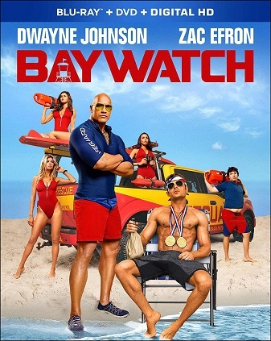

GUARDIANES DE LA BAHIA
Titulo:
Guardianes de la Bahía
Descripcion:
Los populares socorristas que se encargan de la seguridad en la californiana playa de Santa Mónica llegan a la gran pantalla, ellos son la élite de la élite, el alma de esta playa. Mitch Buchannon (Dwayne Johnson), un estricto y esforzado socorrista de la antigua escuela, deberá trabajar codo con codo con el rebelde Matt Brody (Zac Efron), un joven ex nadador olímpico caído en desgracia al que le gusta saltarse las normas. A pesar de tener personalidades opuestas, los dos socorristas deberán unir fuerzas y formar equipo. Juntos descubrirán una trama criminal, en torno a drogas y asesinos, que amenaza el futuro de la Bahía. Su objetivo será proteger la playa de su destrucción a manos de un magnate del petróleo.
Categoria:
Comedia
Audio:
Latino e Inglés subtitulada
Calidad:
Full HD Bluray – Video H.264 2000kbps | Audio AAC 160kbps
Director:
Richie Keen
Elenco:
Charlie Day, Ice Cube, Tracy Morgan, Jillian Bell, Dean Norris, Christina Hendricks, Kumail Nanjiani, Dennis Haysbert, JoAnna Garcia Swisher, Alexa Nisenson, Stephnie Weir, Kym Whitley, Austin Zajur,Gordon Danniels, Bill Kottkamp.